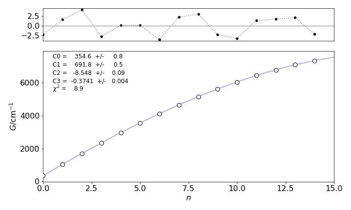
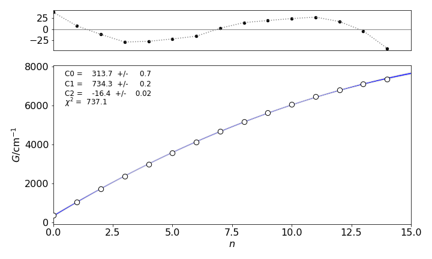

Modelling data is simpler using matrices¶
# import all python add-ons etc that will be needed later on
%matplotlib inline
import numpy as np
import matplotlib.pyplot as plt
from sympy import *
from scipy import linalg
from scipy.integrate import quad,odeint
from scipy.stats import t, norm, chi2, f
init_printing() # allows printing of SymPy results in typeset maths format
plt.rcParams.update({'font.size': 14}) # set font size for plots
While the equations for a linear equation are manageable as summations, the polynomial equations become impossibly complicated. However, as the main concern is not in the algebraic form of the equations per se , only in obtaining the solution to a problem, it is then simpler to convert the simultaneous normal equations into a matrix equation and to solve this for the constants.
Fitting with the equation \(y = \alpha_0 + \alpha_1x\) has already been described in some detail; the polynomial \(y = \alpha_0 + \alpha_1x + \alpha_2x^2\) and exponential \(y = \alpha_0e^{-\alpha_1x}\) are also commonly found functions that describe data. The polynomial still belongs to the class of linear least squares because the normal equations can be solved exactly. The exponential equation will need a non-linear least squares method because the normal equations cannot be solved exactly and an iterative method is required. The method of choice is often the gradient expansion method, also called the Levenberg-Marquardt method, and this is discussed in Section 8. First, however, a matrix formulation of the linear least squares problem is presented and a solution obtained for a polynomial.
6.1 Least squares fit to a plane¶
In a molecule such as heam in hemoglobin it is important to know the distance of the oxygen and histidine N atom from the plane of the molecule and from the Fe atom as these may not be the same. For example the N-Fe atom distances may not change by much during reaction but the Fe itself may move relative to the plane of the molecule.
The equation of a plane is
where \(a,b,c\) are constants. Using the least squares method we minimise the sum of the squares of the deviations via the function
for \(n\) sets of data points \((x_i,y_i,z_i)\) which means taking the derivatives with respect to \(a,b,c\). Thus
Using the notation as before \(S_{xy} \equiv \sum_ix_iy_i\) etc. and \(S_1=\sum_i 1=n\) for \(n\) data points. There are three equations to solve in three unknowns;
The simplest way to solve these using a computer is to convert to a matrix equation \(\boldsymbol {AC}=\boldsymbol B \) and solve this. The equations become
and as the coefficients we want \((a,b,c)\) are in column matrix \(C\), the calculation \(\boldsymbol C = \boldsymbol {A}^{-1}\boldsymbol B\) gives these values.
The Fe atom is placed at (0,0,0) only because this is easier for plotting. The equation of the plane is \(z=0.64x+0.56y+0.42z\) and is shown in figure 10a.
# Algorithm: example fit to plane of heam Data pdb 1THB.
# put Fe atom at x,y,z = 0
Fe = np.array([6.591, -16.663, 12.091]) # HETATM .... HEM C 1 1THB3507
HisN = np.array([7.742, -15.655, 10.429]) - Fe[:] # Atom ... HIS 87 NE2 1THB3086
NA = np.array([7.559, -18.441, 12.096]) - Fe[:]
NB = np.array([7.832, -16.106, 13.651]) - Fe[:]
NC = np.array([5.405, -15.044, 12.620]) - Fe[:]
ND = np.array([5.015, -17.506, 11.076]) - Fe[:]
Ox1 = np.array([5.558, -17.474, 13.668]) - Fe[:]
Ox2 = np.array([4.756, -17.191, 14.691]) - Fe[:]
Fe = np.array([0,0,0])
x = np.array([NA[0],NB[0],NC[0],ND[0]]) # rearrange into x, y, z
y = np.array([NA[1],NB[1],NC[1],ND[1]])
z = np.array([NA[2],NB[2],NC[2],ND[2]])
n = len(x) # n = sum(1) over all 4 atoms
sxx = np.sum(x**2) # make all summations
syy = np.sum(y**2)
sxy = np.sum(x*y)
sx = np.sum(x)
sy = np.sum(y)
sxz = np.sum(x*z)
syz = np.sum(y*z)
sz = np.sum(z)
A = np.array([[sxx,sxy,sx],[sxy,syy,sy],[sx,sy,n]]) # A matrix of S values.
b = np.array([sxz,syz,sz])
fit = linalg.inv(A) @ b.T # @ is matrix multiply
# b is a row matrix so transpose with .T
print('{:s}{:8.4g}{:s}{:8.4g}{:s}{:8.4g}'.format('a = ', fit[0],', b = ',fit[1], ', c = ',fit[2]) )
a = 0.6358, b = 0.557, c = 0.4196
Figure 10a. The Fe atom is moved to be at zero in coordinates and other atoms moved accordingly. The fit is to the plane of the four N atoms and is the black rectangle shown almost edge on. The four N atoms in heam (blue) lie mostly in this plane. The data is used in Question 52 ‘Vectors’ and from pdb 1THB. The Fe atom can be seen to be just out of the plane of the four nitrogen atoms. The two oxygens (red) and the N atom in histidine (green) are also shown. THe sizes of the atoms does not represent their actual or relative radii and was chosen for clarity.
6.1 General least squares method for a polynomial¶
A general way of describing a fitting equation is
which means that that the model equation proposed to represent the data is the sum of m functions, \(f_i(x)\), multiplied by constants \(\alpha_i\) whose values we seek, much as was done in a Fourier series. If the equation is a polynomial, then \(f_1(x) = 1,\; f_2(x) = x,\; f_3(x) = x^2\), and so forth, and, if an exponential then \(f_1(x) = e^{-\alpha_2x},\; f_2(x) = e^{-\alpha_4x}\), etc. It is clear why these last two equations are non-linear because the constants are intimate to the function itself and cannot be separated from it.
The sum of the deviations is minimized just as in the case of the straight line, the equation is
and the subscript on \(x\) is \(k\) because this is the \(k^{th}\; x\) value in the data and \(k\) has values \(1\cdots n\). The subscript \(i=1\cdots m\) identifies the terms in the expansion of the model function of equation 43. Differentiating the \(j^{th}\) term in the \(i^{th}\) summation (\(j\) being anywhere in the list \(i=1\cdots m\)), to obtain the minimum, produces
and the \(f(x)\) remains inside the summation because it depends on the \(x_k\). Rearranging the terms in this equation gives a (complicated) set of simultaneous equations, because \(j\) can take any value in the range \(1 \to m\) for in the function expansion.
the right-hand side of which is a sum of a sum. For example, the third term is
and all \(m\) of these equations can be solved to find the m constants, the \(\alpha\)’s, if the function is linear. A matrix method can be used to do this, but to convert the simultaneous equations into a matrix equation needs a little cunning. A matrix equation of the form
can be made where \(\boldsymbol C\) contains the coefficients. The left-hand side of this equation is a row matrix with a sum over the \(k\) data points for each of \(m\) terms and is the left-hand side of equation 45,
and, in the second line, the abbreviation, \(S(\cdots )\), is used to indicate the summation over the \(k\) data points. The right-hand side of the normal equations (13.45) can be written as a square matrix A left multiplied by a row matrix C to make another row matrix thus making the right-hand side of the equation equal to the left. To form \(\boldsymbol{CA}\), the right-hand side of 45 or 46 has to be split into a column and square matrix. It is clear that in each term \(f\) has indices in \(i\) and \(k\) so the term in row 1 column 2 in the \(A\) matrix can be written using the \(S\) abbreviation as \(\displaystyle S(wf_1f_2)\equiv \sum_kw_kf_1(x_k)f_2(x_k)\) and does not contain any \(\alpha\), therefore
If the row matrix C contains only the coefficients, \(\displaystyle \boldsymbol C=\begin{bmatrix} \alpha_1 & \alpha_2 & \cdots\end{bmatrix}\) the right-hand side of matrix equation 47 is
Expanding out the third term produces
which is the same as equation 46.
The aim is to find the values in the \(C\) matrix and this can be achieved by the transformation
Thus the inverse of \(\boldsymbol A\) is all that is needed to find the coefficients, furthermore this inverse is also the matrix of the variances and co-variances (Bevington 1969).
6.2 Example of a polynomial fit¶
As an example, the functional dependence of the vibrational energy levels of the \(B (^3\sum _u^-)\) excited state of the oxygen molecule, which has \(D_{\infty h}\) point group symmetry, will be found by analysing some data. The \((^3\sum_u^-)\) term symbol means that the molecule is in a triplet spin state and hence has two unpaired electrons, one in each of two orbitals, which together have zero orbital angular momentum, hence the symbol \(\sigma\). The orbitals are ungerade (\(u\)) or odd, so that they do not have a centre of inversion and the minus sign means that the electronic state is symmetric to \(C_2\; (180^\text{o})\) rotation about the principal axis. The vibrational levels have been measured by observing the absorption spectrum in the ultraviolet starting just above \(200\) nm and the \(n=0\) level has energy of \(49363\;\mathrm{cm^{-1}}\) above the \(n=0\) of the ground state. The energies of the vibrational levels above the bottom of this potential well and their quantum numbers \(n\), are shown in the table.
The weights for the data are unknown and hence \(1\) is used, as this produces an unbiased estimate of the coefficients. An anharmonic potential energy model will be tested. The Morse potential produces vibrational energies (in cm\(^{-1}\));
and if this is not sufficient to describe the data, it is common to add another term empirical term
or
which is a cubic polynomial in \(n\). The equilibrium frequency is \(v_e\;\mathrm{ (cm^{-1})}\) and the anharmonicity terms are \(x_e\) and \(y_e\). In the Morse potential, \(x_e = v_e/4D_e\) where \(D_e\) is the dissociation energy in cm\(^{-1}\), but \(y_e\) is empirical and the aim is to determine \(x_e, y_e\) and \(v_e\). If the quantum number \(n\) is represented by \(x\), and the constants by \(c\), then the Morse model \(G_2\) is equivalent to a function \(f=c_0 +c_1x+c_2x^2\) and the second model \(f=c_0 +c_1x+c_2x^2 +c_3x^3\). The least squares model calculates these coefficients and these can then be related to the spectroscopic parameters \(v_e, x_e\) and \(y_e\). The residuals and \(\chi^2\) will be used to test the fit to the data. (Note that different authors us different symbols to represent frequency, and this can be in units of cm\(^{-1}\), s\(^{-1}\), rad cm\(^{-1}\) or rad s\(^{-1}\)).
The Python implementation is quite simple, compared to the derivation, and even compared to the linear case.
# Algorithm: Least Squares polynomial fit
yval = np.array([352.3,1039,1705,2340,2961,3553,4113,4652,5153,5613,6040,6433,6780,7083,7335])
n = len(yval)
xval = np.array([i for i in range(n)])
w = np.array([1 for i in range(n)]) # weights unknown so use 1
m = 4 # 4 params; C[0] + C[1]*x + C[2]*x**2 + C[3]*x**3
A = np.zeros((m,m),dtype=float)
B = np.zeros(m,dtype=float)
C = np.zeros(m,dtype=float)
for i in range(m):
B[i]= sum(w*yval*xval**i)
for j in range(m):
A[i,j]= sum(w*xval**i*xval**j)
pass
C = np.transpose(B) @ np.linalg.inv(A)
print('least squares values ',C)
line = lambda x: sum( C[i]*x**i for i in range(m) ) # fit C[0] + C[1]*x + C[2]*x**2 + C[3]*x**3
chisqr = np.sum( w**2*(yval-line(xval))**2 ) /(n-m-1) # reduced chi sqr
print('{:s} {:6.3f}'.format('chi^2 = ',chisqr) )
df = n - m # using chi squared function directly
fchi = lambda x: x**(df/2-1) * exp(-x/2)/(2**(df/2)*gamma(df/2))
Q,err = quad(fchi ,chisqr,np.inf )
print('{:s} {:6.3f} {:s} {:6.3g}'.format('probability of getting chi^2 > ',chisqr,' is', Q))
least squares values [ 3.54563954e+02 6.91757746e+02 -8.54753465e+00 -3.74147394e-01]
chi^2 = 8.917
probability of getting chi^2 > 8.917 is 0.63

Figure 11. Experimental data points and the function \(G_3\) calculated by least squares. The residuals are shown on the top of the plot. Notice how small the residual scale is compared to that of the data.
The error matrix is calculated as the inverse of \(\boldsymbol A\). The off-diagonal terms are the covariances, notice that the matrix is symmetric about the diagonal. The covariances between \(c_1\) and \(c_2\) are quite large, \(-0.34\), and these are expected to be the least accurate since one value may compensate for the other; the other covariances values are small.
cov = np.linalg.inv(A) # invert matrix
for i in range(m): # pretty print matrix
for j in range(m):
print('{:6.3f} '.format(cov[j,i] ), end = '' ) # end='' prevents line return
print('')
print('\ncoefficients and errors')
for i in range(m):
print('{:8.4g} {:s} {:6.1g}'.format( C[i],' +/- ',np.sqrt(cov[i,i]) ) )
0.673 -0.344 0.047 -0.002
-0.344 0.276 -0.045 0.002
0.047 -0.045 0.008 -0.000
-0.002 0.002 -0.000 0.000
coefficients and errors
354.6 +/- 0.8
691.8 +/- 0.5
-8.548 +/- 0.09
-0.3741 +/- 0.004
Discussion of results¶
To calculate the spectroscopic parameters, the constants have to be compared to the expansion of the \(G_3\) equation 49, which is
The first term in this equation corresponds to \(c_1\) and is the zero point energy. The constants are
which compare well with the values given by Herzberg (1950, p. 559) which are
and the zero point energy is \(348.13\) cm\(^{-1}\). Because the weighting is unknown, the \(\chi^2\) is only relative but the \(Q\) factor is large \(0.63\) meaning that there is a \(63\)% by chance of getting a lager value even for a correct model, i.e. at random we expect to see this \(\chi^2\) being exceeded which indicates that the model fits the data, because perfect fit would produce a probability of \(50\)% in this test. If the chance \(Q\) were very small and effectively zero the \(\chi^2\) could never be exceeded at random which would indicate a poor fit, i.e the \(\chi^2\) is so large that a larger value cannot be reached by random chance. This means that the \(\chi^2\) is far out in the wings of the distribution. A good fit is obvious from the residuals as well.
The calculation with the Morse equation \(G_2\) is achieved by setting \(m = 3\) and making no other changes. The calculation produces a fit that looks virtually the same as shown in figure 12, but the residuals are about ten times larger and oscillate noticeably. The \(\chi^2 = 737\) and \(Q \approx 10^{-150}\to 0\) and this \(\chi^2\) is so big that it there is no chance of it being exceeded at random, which means that the chance that this model is correct is effectively zero. This demonstrates that \(\chi^2\) and the residuals are vital in determining the correct fit. If five terms are used in the calculation, the \(\chi^2\) is reduced only to \(8.6\), compared to \(8.9\) for four terms, which is essentially the same value, therefore, five terms are rejected as not providing any significant improvement in fitting the data, i.e. the fifth term is unnecessary. Finally, if the fifth term is added a physical reason for doing this must be advanced and justified by the dynamics of the molecule.

Figure 12. Data, fit and residuals for the \(G_2\) fitting equation showing oscillations because this model function does not describe the data well. Compare with fig 11.
6.3 Confidence limits¶
The confidence limits can be calculated in a similar manner to that for the straight line, using the value from the \(t\) distribution. The equations look slightly different because the matrix method is used. (See Hines & Montgomery 1990, Chapters 14-15 for the details.) They calculate the mean square error \(SSE /(n - m - 1)\), which is the same as the \(\chi^2\) on the whole data set, and give the formula which is equivalent to the one used here, where matrices \(\boldsymbol{C}\) and \(\displaystyle{B}\) are defined as in equations 47-48,
The confidence limits at \(95\)% are now
where \(\boldsymbol A^{-1}_{ii}\) is the \(i^{th}\) diagonal value of the inverted A matrix and \(c_i\) is the \(i^{th}\) coefficient.
If the row matrix \(x_0 = \begin{bmatrix}1& x& x^2& x^3\end{bmatrix}\) is defined, limited to \(x^3\), because the highest power of \(x\) used in the model function is \(x^3\), then the \(95\)% confidence lines around the fitted curve (line(x)) are calculated as
This curve is not shown in figure 11 because it is almost identical to the fitted curve, and would not be clear on the graph. Note that the product of the three matrices is a function of \(x\) because matrix A consists only of numbers. See figure 7.7 (Matrices) for examples of matrix multiplication.
7 Photon and particle counting and the Poisson distribution¶
The Poisson distribution is formed by accumulating many events, \(n\), and describes the situation where each event has a very small probability of occurring, \(p\), but the product \(np\), the mean number of events, is moderate. The distribution is asymmetric and skewed towards small numbers, Figure 13, because it is not possible to have a negative number of events. This distribution is observed when photons are counted or particles counted after a radioactive atom disintegrates, provided their decay time is long compared to the observation time. However, the distribution applies to many other types of events, such as the number of faulty CDs produced, the number of misprints on a printed page, or the number of students absent from a class in any week. One of the earliest examples was recorded over a twenty year period during the 1800’s, and was the number of deaths of infantrymen in the Prussian army after they were kicked by a horse.
Suppose that a sample of molecules is continuously excited, and their fluorescence viewed through a small aperture or through filters to reduce the intensity so that photons are detected one at a time by a photodiode or photomultiplier. The number of electrical pulses from the detector for, say, \(1000\) time intervals each of \(1\) second duration is recorded. If a histogram of the number of events recorded in each time interval is made, then this should follow a Poisson distribution. If DNA is exposed to UV light, photo-damage can occur by base pairs forming dimers. If the DNA is spliced into pieces of equal length, the number of dimers in each piece can be recorded. If the pieces are each very small, 10 base pairs for example, most will not contain a dimer, a few will contain one and fewer still will contain two or more and so on. The distribution formed will have a large value for zero dimers and become smaller as the number of dimers increases. In a second experiment, suppose that \(100\) base pair long segments are examined. Now only a few segments have no dimer, some have one and many have two, three, or four but fewer segments will have five or more. This distribution is now peaked at a value of, say, \(2.5\). Repeating the experiment with a larger segment will cause the distribution to peak at still larger values until it closely resembles a normal distribution. What has changed between the experiments is only the average number of dimers detected in each segment, thus the Poisson distribution is determined by only one parameter, the average number of ‘events’. A similar argument applies to the number of photons or particles detected in progressively longer time intervals.
The Poisson distribution applies when the number of events \(n\) that are measured is very large, but the chance \(p\) of any one event occurring is very small. The product \(\mu = np\) is the mean or average number of events and is of moderate value. The distribution can be derived from first principles, see Hines & Montgomery (1990, chapter 6.8) for this proof, or it can be obtained from the binomial distribution when \(n\) is large and \(p\) small.
A Poisson process is that one that generates the distribution and assumes that each event randomly occurring is independent of all others and that each occurs in a non-overlapping time interval (i.e. its own). This means that in a time interval \(\delta t\) (a) the chance of only one event being recorded is \(\lambda \delta t\) where \(\lambda\) is a positive number, (b) The probability that zero events happen is then \(1-\lambda\delta t\) and (c) the probability that two or more events is zero. The constant \(\lambda\) is called the mean arrival rate and has units of 1/time.
The chance of no event occurring at time \(t\to t+\delta t\) (where \(t\) is fixed) is
which is the product of the chance of no events up to time \(t\) and of no events in time \(t\to\delta t\). Rearranged this is
and in the limit of small time increment is the simple differential equation; \(\displaystyle \frac{dp_0(t)}{dt}=-\lambda p_0(t)\).
Integrating and multiplying by the number of molecules \(N_0\), initially present that can react, fluoresce or decay radioactively give the familiar first order decay, \(N=N_0e^{-\lambda t}\) where \(\lambda\) is the rate constant for the process and its reciprocal the lifetime.
When the number of events is not zero, the chance of \(k\) events in the same time interval is
The first term on the right is the chance of \(k-1\) events in up to time \(t\) then one event in time \(\delta t\), the second the chance of all \(k\) events in time \(t\) and none in \(\delta t\).
Rearranging and taking the limit \(\delta t \to 0\) produces a second differential equation
The two equations can be solved with
At a given time \(t\) we let \(\mu=\lambda t\) and then The Poisson Distribution equation becomes
also called the Poisson frequency distribution or ‘density’ function. The integer number of events is \(k\) and the mean value of the distribution is \(\mu\) which is dimensionless and which is not an integer. The shape of the distribution is shown in Figure 13 for different mean values \(\mu\). The plots show continuous values for \(k\) although the distribution is only valid for integer values.
Notice that, when the mean is larger, the distribution resembles a normal distribution and is almost symmetrical. But at small \(\mu\), the distribution is very asymmetrical with the mean always to larger \(k\) than the peak (the mode or most probable value) of the distribution. The standard deviation of the distribution is also shown and this is
where \(\mu\) is the average number of events detected; for instance, the number of photons detected in a given time period at a given wavelength. This is important as it means that \(\sigma\) is always known for any number of counts. This relationship also means that the weighting for analysing Poisson distributed data is for each point \(i\), \(w_i = 1/k_i\). The mean \(\mu\) and variance \(\langle k^2\rangle\) are
and so as per definition \(\sigma^2=\langle k^2\rangle-\langle k\rangle^2 \) and both \(\langle k\rangle\) and the variance are equal to \(\mu\), see Q10.
The chance of no success, that is of not observing an ‘event’, is \(e^{-\mu}\). The chance of observing one event \(k = 1\) is \(\mu e^{-\mu}\), of two events \(\mu^2e^{-\mu}/2!\), and of exactly \(k\) events is \(p(k, \mu)\). The chance of observing more than one event is \(1 - e^{-\mu}\). The sum to infinity is unity, and therefore the distribution is normalized.

Figure 13 The Poisson distribution for different integer \(k\) values and various means values \(\mu\). Although \(k\) is an integer, the lines are drawn as if it were continuous. The standard deviation \(\sigma = \sqrt{\mu}\), is shown for \(\mu = 2\) and \(12\). The distribution becomes more Normal as \(\mu\) increases.
(i) Counting photons¶
A photomultiplier records photons at a constant rate of \(\lambda =0.4\) events per \(100\) nanoseconds.
\(\quad\) (a) What is the chance that no event is recorded in the first \(200\) ns and
\(\quad\) (b) what is the chance that no photon occurs in the next \(100\) ns if none are recorded in the first two?
Solution. The parameter \(\mu =\lambda t =0.4\cdot 2\) taking the time unit as \(100\) ns and \(k=0\) for no event so \( p(k,\mu) = e^{-0.8} = 0.45 \). In (b) because the events are independent so probability of an event between time slot \(2\to 3\) is the same as that of \(0\to 1\), thus \(p(k,\mu)= e^{-0.4}=0.67\).
(ii) Still counting photons¶
Counting photons with a more fluorescent sample photons are recorded at a rate of \(4\) per \(100\) ns. What is the chance that
\(\quad\) (a) one has been detected in \(50\) ns and
\(\quad\) (b) a total of \(5\) in \(250\) ns?
Solution. Again taking the time unit as \(100\) ns \(\mu=4\cdot 0.5\) for the first photon (\(k=1\)) giving \(p(k,\mu)=\mu e^{-\mu} = 2e^{-2} = 0.27\). (b) The probability of the total event is the product of the two, where each event is independent, there is one photon in the first period and \(4\) more in the extra period. For the extra period, \(\mu=4\cdot 2\) and the probability with \(k=4\) is \(p(k,\mu)=8^4e^{-8}/4!=0.057\) and combined is \(0.0155\).
(iii) CCD detecting photons¶
There is a \(2\)% chance of a CCD detecting a photon / angstrom in the range 3500 to 3600 angstrom.
\(\quad\) What is the chance that at least two photons will be detected?
Solution. As two or more are detected we find the chance of not detecting zero or one photons, which is \(1-p(0,\mu)-p(1,\mu)\) and as \(\mu= 0.02\cdot 100 = 2 \) the chance is \(1- 2^0e^{-2}/0!-2^1e^{-2}/1= 0.59\). As no time period is specified this period could take any value without changing the answer excepting that the probability would then be \(0.59\)/time period.
(iv) DNA cleavage¶
Poisson distributions arise in surprising situations. DNA can be cleaved in various ways, for example by special enzymes or in a simpler way with a dye intercalated between base pairs or simply ultra-violet light.
\(\quad\) If a piece of DNA containing \(n = 12000\) base pairs and with \(50\)% Guanine content is to be cleaved by a reagent that recognises the sequence GGCGCC, we would like to know what is the chance that there is failure to cleave.
Solution. As there are six bases to be recognised but only four types of bases in DNA (G,C,A,T) the chance of matching the sequence is \(p=1/4^6=1/4096\) with average of \(\mu = np =12000/4096=2.93\). Using the Poisson distribution the chance of no cleavage (\(k=0\)) is \(P(0,\mu)=\mu^0e^\mu/0!= 0.053\) or \(5.3\)% which means that \(\approx 95\)% are cleaved. In this calculation it is implicitly assumed that all small groups of sequences are equally likely, which is probably not an unreasonable assumption in a long piece of DNA.
(v) Chance of winning lottery¶
In a lottery every player has to guess a sequence of \(6\) digits from \(0\to 9\). If a million people play, what is the probability that there are two winners?
Solution. Each player has a one in a million chance of guessing the right number and each player guesses independently. The number of winners is then a Poisson random variable with \(\mu=10^6\cdot 10^{-6}=1\). The chance is \(p(2,1)= 1^2e^{-1}/2!\approx 0.18\).
Cumulative distribution¶
The cumulative distribution is found by summing to a given \(k\) value
The cumulative distribution is used to estimate the chance of having a value larger than say the 95% probability.
Weighting the Poisson data¶
Photon and particle counting experiments normally follow a Poisson distribution. The weighting to use is \(w_i = 1/c_i\) where \(c_i\) is the mean number of counts at the \(i^{th}\) data point in the data, thus, the weighting is always known. This does lead to a specific problem, viz., what happens when no counts are recorded in a particular channel, \(c_i = 0\)? This is quite possible at low light levels as occurs in single photon counting fluorescence decay experiments, or, when measuring fluorescence from single molecules through a confocal microscope. The advice to deal with this is to manipulate the data either by ignoring values below \(10\) counts, or to add 1 to every data point or to make each zero into 1 and leave all the rest alone. None of this is satisfactory because it will cause incorrect parameters to be produced to the fitted data, and must be avoided. By making these changes, both the data and residuals are changed similarly so the effect can be disguised. The solution (Turton et al. Anal. Chem. 2003) is to fit the data with a weighting of 1 and then the use values from the fitted curve as the weighting and refit the data. This has been shown to produce unbiased fits down to a very few counts in the total signal and contradicts the widespread assumption that least squares fitting of Poisson distributed data is invalid. One further point worth making is that when conducting counting experiments, it is not the maximum number of counts in any one channel that is important for data fitting but the total number of counts in the whole signal.
7.1 Estimating signals buried in noise¶
A useful feature of Poisson distributed data is that their sum is also Poisson distributed. If \(x_1, x_2, x_3 \cdots\) are a set of Poisson distributed random numbers with means \(\mu_1, \mu_2\cdots\), then their sum \(\mu = \mu_1 + \mu_2 + \mu_2 + \cdots\) is also Poisson distributed with mean \(\mu\) and standard deviation \(\sqrt{\mu}\). Thus, data can be summed to improve its standard deviation. However, Poisson distributed data cannot be subtracted, because it would be quite possible to obtain negative numbers. This means that when a signal that is Poisson distributed has some background noise, this cannot be subtracted away but the model used to analyse the data has to contain a constant term to account for this, if the background is known to be constant, or a polynomial if it is not.
All instruments produce noise unrelated to the signal and it is often necessary to decide if a signal is present in noise but summing (binning) data does not help because the noise is also summed. For example, a very weak light source may be obscured by thermally induced ‘dark’ noise from the detector (photomultiplier, photodiode, or CCD etc.) and subsequently amplified in other circuitry. Alternatively, the noise could be from other light close in wavelength to the one being detected or electrical noise added by amplifiers. To decide if a signal is present, data has to be taken with and without what is suspected to be the true signal being there.
Distinguishing between signal and noise depends crucially only on their respective standard deviations. A large and constant background is not a problem; it is the fluctuation in the background that limits the signal to noise. To illustrate this, an argument presented by Parratt (1971, Chapter 5.8) based on the combination of errors equation, is described. If there are two sets of counts, \(c_b\) for the background and \(c_{sb}\) for signal and background, because a signal cannot be detected without background, then the difference in the population means is
where \(\Delta s\) is the experimental standard deviation of the difference in counts. If there are many measurements, the central limit theorem predicts that this difference is normally distributed. Then, using the combination (propagation) of errors equation,
where \(s_b\) and \(s_{sb}\) are the standard deviations for background and signal plus background respectively. For single measurements of Poisson data the standard deviation is equal to the number of counts giving \(\Delta s=\sqrt{2\left(c_b^2+c_{sb}^2\right)}\). If the two means \(\mu_b\) and \(\mu_{sb}\) are for the moment assumed to be the same then \(c_b - c_{sb}\) can be tested by comparing with \(\Delta s\) at, say, the \(5\)% probability level of a standard normal distribution to determine the chance whether or not \(c_b = c_{sb}\). If the ratio \(| c_b - c_{sb} |/\Delta s = 1\), then the probability that \(c_b \ne c_{sb} = 0.32\), (or \(32\)%) which is the area of the normal curve above \(x/\sigma = 1\), Figure 4 and this is too small to be considered very strong proof that the signal and noise are different. If the ratio \(| c_b - c_{sb} |/\Delta s \ge 1.96\) then chance that \(c_b \ne c_{sb}\) is measured at the \(95\) % level (see Table 1) and the signal would be distinguishable from background.
Consider the case when the counts at a given wavelength in a spectrum are \(c_{sb} = 105\) and \(c_b =100\) , then \(\Delta s=14.3\) and \(c_b -c_{sb} =5\) and the ratio \(| c_b - c_{sb} |/\Delta s = 0.35\). Using the cumulative distribution described in equation 9, the chance that \(c_b \ne c_{sb}\) is \(\approx 27\)%. Note that to use the two sided values the integration is multiplied by 2 and subtracting one makes it the chance \(c_b \ne c_{sb}\).
cb = 100
csb= 105
deltas=np.sqrt((cb+csb))
ratio = np.abs(cb-csb)/deltas
fnorm = lambda x :np.exp(-x**2/2)/np.sqrt(2*np.pi) # normal distribution mu=0,sigma=1
ans, err = quad(fnorm,-np.inf,ratio)
print('{:s} {:6.1f}'.format('% chance different',100*(2*ans-1) ) )
% chance different 27.3
which is so sufficiently that the two signals are indistinguishable. If the counts are \(c_{sb} = 150\) and \(c_b = 100\) then \(\Delta_s = 15.8\) and \(c_{sb} - c_b = 50\) and percentage chance that \(c_b \ne c_{sb}\) is
cb = 100
csb= 150
deltas=np.sqrt((cb+csb))
ratio = np.abs(cb-csb)/deltas
fnorm = lambda x :np.exp(-x**2/2)/np.sqrt(2*np.pi)
ans, err = quad(fnorm,-np.inf,ratio)
print('{:s} {:6.1f}'.format('% chance different',100*(2*ans-1) ) )
% chance different 99.8
Therefore, the signals can easily be distinguished above the noise at the \(99.8\)% confidence level, which means that the chance that the difference in means will exceed the standard deviation by pure chance alone is only \(0.16\) %.
If the data is not Poisson distributed and/or data sets are added together, then
for \(n_{sb}\) sets of signal measurements and \(n_b\) background.